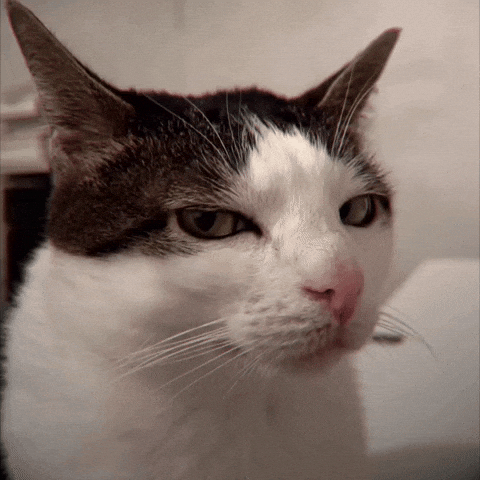

Сегодня очистили душу: 4,205 человек
КИБЕР-ИСПОВЕДЬ

Готов ли ты заглянуть в себя?
Искренний разговор о том, что тяготит душу. Без осуждения и канонов.

Искренний разговор о том, что тяготит душу. Без осуждения и канонов.